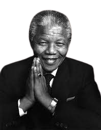

A WINNER is a DREAMER who NEVER gives up.

Biography
Nelson Mandela was a south african anti-apartheid revolutionary who bacame the countary's first black president in 1994. He spent 27 years in prison for his activism and advocary for racial equality. Mandela's leadership and commitment to reconciliation made him a symbol of peace and social justice worldwide. Nelson mandela's Legacy continues to inspire people around the world he pased away on December 5, 2013. but his vision for a more just and equal society lives on.
Accomplishments
- Mandela played a pivotal role in ending apartheid, the discriminatory system in south Africa, and promoting racial reconciliation
- Mandela was elected as south Africa's First Black president in 1994, marking a historic transition to Democracy
- Mandela, along with F.W. de Klerk was awarded the Nobel prize in 1993 for their effort to peacefully end apartheid